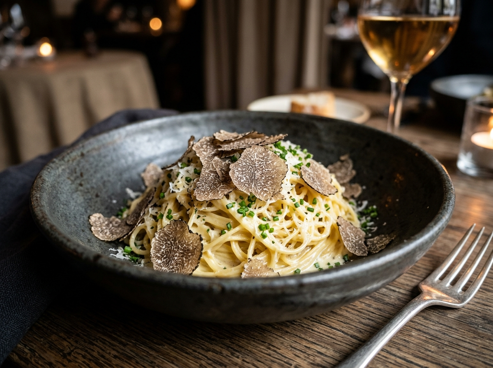

The Dining Experience
More than dinner: an unhurried, multi-course narrative curated to elevate time, awaken the senses, and celebrate human connection.

The Art of Fine Dining
True luxury does not clamor for attention; it envelops you in seamless serenity.
From the instant our doorman welcomes you from Fifth Avenue, every transition has been choreographed. Acoustic panelling concealed behind acoustic velvet dampens city resonance, allowing gentle jazz, the chime of crystal, and intimate dialogue to take center stage.
Each seating is spaced with generous privacy. Our waitstaff move with quiet precision, anticipating preferences before they are spoken.

Culinary Excellence
Classical French discipline executed with modern precision and Japanese harmony.
Our kitchen operates on the premise that technical virtuosity must always serve natural flavor. Stocks are simmered for forty-eight hours; sauces are mounted with cultured mountain butter; pasta dough is rolled by hand each dawn utilizing forty egg yolks per kilogram of organic semolina.
48-Hour
Demi-Glace Reductions
Binchotan
White Oak Charcoal

Executive Chef Antoine Laurent
"A dish must possess a beginning, a luminous middle, and an enduring resonance."
Trained in the 3-star Michelin temples of Paris and Lyon before helming celebrated dining rooms in Tokyo and New York, Chef Laurent unites French architectural rigor with the Japanese reverence for peak-season freshness.
At Celestial Cuisine, Chef Laurent spends hours each week walking local Hudson Valley farms, selecting heirloom varietals bred specifically for our kitchen.
Read Chef Laurent's StorySeasonal Terroir Sourcing
We celebrate the artisans who tend the soil, harvest the ocean, and pasture our livestock with regenerative dedication.
A5 Kuroge Wagyu
Certified BMS 10–12 ribeye raised with pristine mountain spring water and unhurried natural diets for unparalleled intra-muscular marbling.
Wild Diver Scallops
Hand-harvested by generational free-divers from sub-arctic current waters, transported live to preserve delicate ocean sweetness.
Winter Black Truffles
Foraged by trained Lagotto Romagnolo hounds under ancient oak groves, delivered to our cellar within 48 hours of harvest.

The Wine & Beverage Experience
A 1,400-reference wine program honoring legendary European domains and visionary American pioneers.
Led by Master Sommelier Clara Dupont, our cellar balances storied Bordeaux First Growths and Grand Cru Burgundies alongside bio-dynamic grower champagnes and library allocations from Sonoma, Willamette, and Piedmont.
For our spirit patrons, our mixologist crafts smoked table-side cocktails incorporating rare single-cask bourbons, Japanese whiskies, and house-clarified botanicals.
Explore Beverage List
Interior & Ambience
Designed by visionary interior architects, our dining room embraces warm earthen tones, Italian leather, and hand-patinated bronze.
Every table is dressed with bespoke Belgian linen, custom hand-thrown black ceramic chargers from Asheville potters, and customized Christofle silverware.